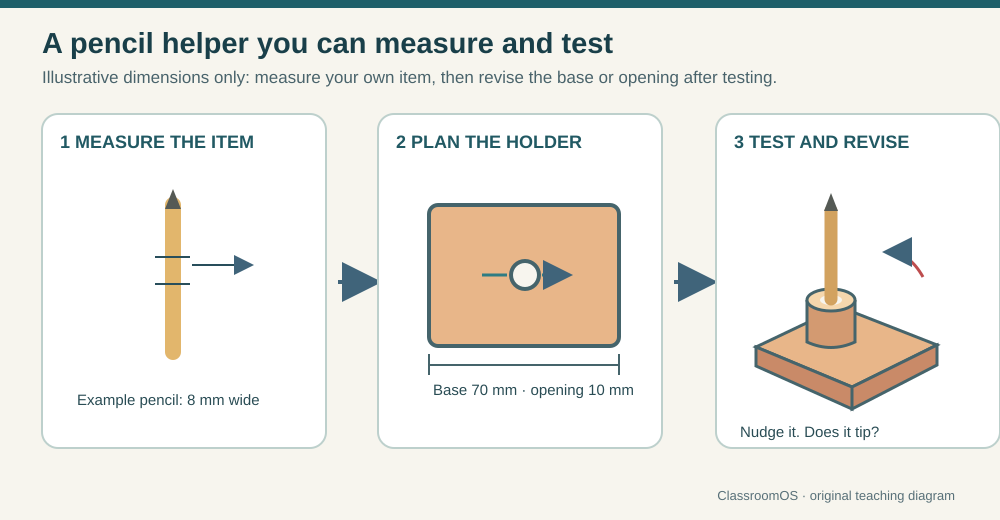
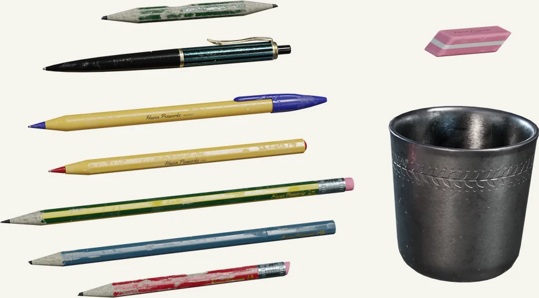
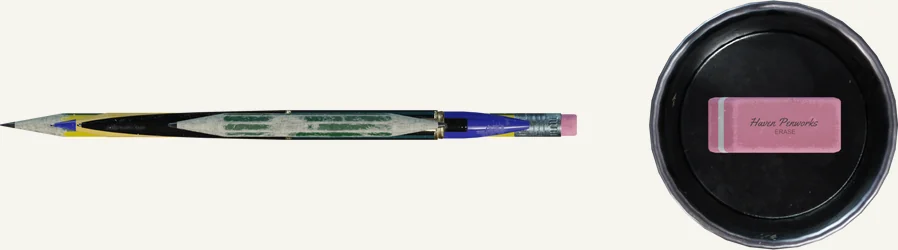
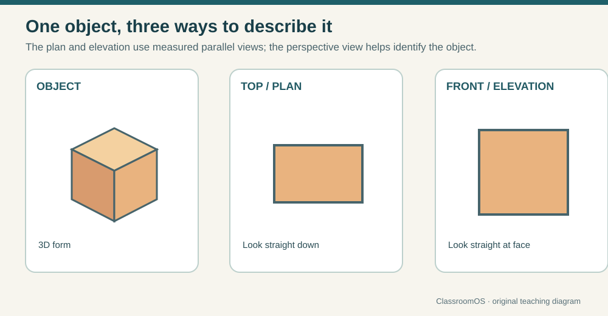
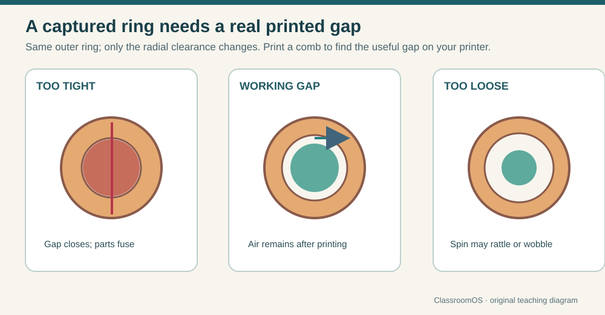
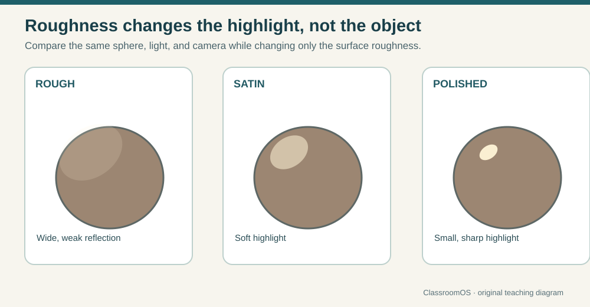
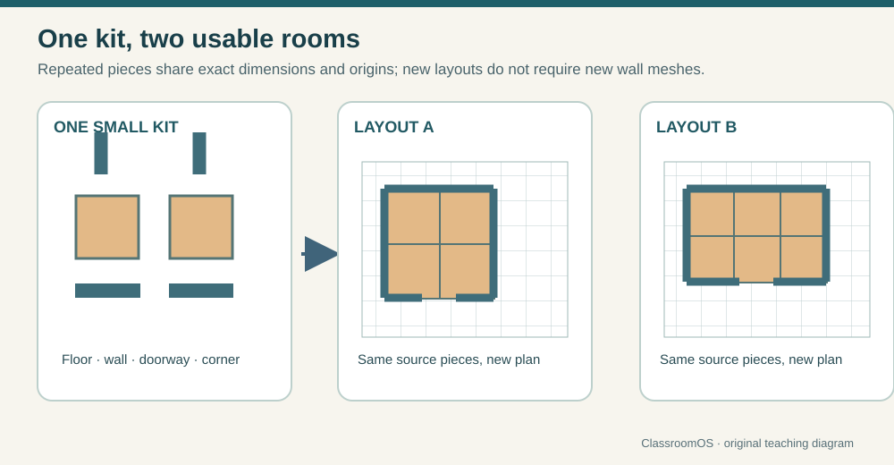

One pencil helper, three questions: Does the opening fit, does the base stay steady, and what would you change after testing? Original ClassroomOS design study.
First project
Make a desk helper
Design something that holds one school item: a pencil, a note, a book, or a phone. Your object needs a stable base and an opening, slot, or raised edge that does the holding.
See the item, opening, and base together
This pencil helper is one possible answer. Its dimensions are examples: measure the item in your classroom, make a quick version, then change what the test reveals.

A broad base resists tipping; an opening must fit the item it holds. The 8 mm pencil, 10 mm opening, and 70 mm base are illustrative starting dimensions, not measurements to copy. Original ClassroomOS teaching diagram.

Notice the different widths and lengths of the objects a desk helper might hold. Pick one item before deciding the size of its opening. Source: Stationery Supplies by Mateusz Sadek / Poly Haven, CC0.

The top view makes the cup opening visible. Draw your own top view to show where the item enters the holder and how much base surrounds it. Source: Stationery Supplies by Mateusz Sadek / Poly Haven, CC0.
NoticeWhat must your object hold? How big is it?
PlanSketch the front and top. Mark one size or measurement.
MakeJoin shapes or remove a shape to create the holder.
TestTry the real item or inspect the model from three views. Change one feature and explain why.
K–2 · Make and describe
Build a model with blocks, cardboard, or clay. Point to the base and the part that holds the item. Turn it and draw what you see from above. An adult can demonstrate the same shapes in Workbench.
Show: your model and a drawing; say what you changed after the item slipped or tipped.
Grades 3–5 · Shape and measure
Measure your item with a ruler. Sketch a base, then make a digital version with two or more shapes in Workbench. Use the camera to check the opening. Save the editable project with adult help if needed.
Show: a top view, one measurement, and a before/after change.
Grades 6–8 · Model and compare
Draw aligned views in Blueprint Drafting Studio. Build the design in Workbench or Forge, then compare its dimensions with the plan. Test a physical prototype or ask a teacher to review a slicer preview.
Show: the plan, editable model, and evidence from a test.
Grades 9–12 · Engineer and iterate
Set measurable limits for size and stability. Model with dimensions, inspect a mesh export, and revise after a user test. If printing, justify orientation, contact area, supports, and clearance using a slicer preview.
Show: a design file, export, test result, and reasoned revision.
Class checkpoint: Can a partner identify what the object holds, find the feature that holds it, and name the change that made it work better?
Choose a test before you build
Pick one item from your desk. Measure it or trace around it, then decide what a successful holder must do. Record the first result and one change; a drawing or spoken explanation counts for younger makers.
Fit: Can the item enter and leave without forcing it?
Stability: Does the helper stay upright when the item is added and removed?
Use: Can someone find and reach the item easily?
Design record: “My first version ___ when ___. I changed ___ so that ___.” Test the revised version with the same item.
Shared skills
Learn to see and change a model
Each browser workshop has a small practice model. Try the skill there, then apply it to your own desk helper in Workbench, physical materials, or another modeling app. Younger students can draw or build while a teacher demonstrates.

Three views answer different questions: perspective reveals form, the top view reveals footprint, and the front view reveals height. Original ClassroomOS teaching diagram.
Practice cutting the sample wall. Add a slot or pocket to your own helper only if the design needs it.
Ready for a route: Show your helper from two views, identify one size, and explain what changed after testing. Reopen a digital project if you made one.
Choose an outcome
Where will your model go?
Use your desk helper for one route. The browser samples teach techniques; your own design is the project. K–5 students can finish with a drawing, physical model, and explanation. Grades 6–8 can add an editable model. Grades 9–12 can test a print or game export.
Physical objects
Make it real
Design a measured object, inspect its export, and plan a print. A printer is optional: a slicer preview and a proposed test count as planning evidence.

For moving parts, the space left between pieces matters as much as the solid shapes. Compare the gaps in a slicer before printing a clearance test. Original ClassroomOS teaching diagram.
Use the measured drawing you made in the shared skills.
Finish when: The imported size matches your plan and you can explain a print decision using a preview or test result.
Models and images
Make it look
Develop one model and present it clearly. Use the browser workshops first; the Blender instructions are deeper reference.

Keep the model, light, and camera in place while you compare surfaces. Roughness changes the highlight, so a material choice can reveal or hide form. Original ClassroomOS teaching diagram.
Build reusable objects that fit a game world, then test the export in its destination. Game Asset Studio has the full project briefs.

Game objects become useful when pieces share a grid and assemble in more than one arrangement. Test the kit in its destination engine. Original ClassroomOS teaching diagram.
Designers have long used drawings and physical models to test an idea before building it. Computers made those models editable, repeatable, and eventually movable. These milestones connect the tools in this pathway to the people who developed them.
Draw and revise on a screen
Ivan Sutherland's Sketchpad let a person draw with a light pen and change structured drawings. That idea still lives in CAD: adjust a dimension, then inspect the result. Computer History Museum: Sketchpad
Make a form move
At the University of Utah, Ed Catmull and Fred Parke built polygon models of a hand and faces, then calculated moving views with shaded surfaces. A 3D object could be animated from changing poses rather than redrawn from every angle. Computer History Museum: early 3D animation
Model a familiar object
Martin Newell turned a teapot into 3D coordinate data. Researchers reused it to test surfaces, lighting, and rendering. Today you also begin with a simple object, then change how it is modeled or shown. Computer History Museum: Utah Teapot
Turn a digital design into a part
Chuck Hull made an early 3D-printed part using stereolithography, which hardens liquid resin with light. The classroom's filament printer uses a different process, but both build from a digital model one layer at a time. 3D Systems: early printing history
Give a model character
Pixar's Luxo Jr. used animated desk lamps to tell a story through movement and timing. A model's shape matters, but its poses can communicate just as much. Pixar: Luxo Jr.
Build an entire feature in CG
Toy Story became the first feature-length computer-animated film. Modeling, materials, lighting, animation, and rendering had to work together across a whole story. Pixar: studio history
Share the tools
Blender became open source. More learners could study and change a complete 3D creation tool, and use it for modeling, animation, and rendering. Blender Foundation: history
Discuss: Which step made it possible to revise a design, which made it possible to move one, and which helped more people make their own?
Open studio
Build your own idea
Workbench lets you add shapes, cut holes, group parts, save an editable project, and export a model. Start from a working example, then change it for a user:
Finish when: Your project reopens and you can point to one deliberate change.
Show your thinking
Keep a small design record
Plan: Name the user, purpose, and one requirement you can check.
Build: Save an editable file or photograph a physical model.
Test: Try the real item, inspect the slicer, or open the export in its destination.
Improve: Show the earlier version and explain one change.
Teachers can accept spoken explanations and photographed models for younger students. Older students should include measurements, files, and evidence from testing.
Need the buttons for a specific app? Use Tool Rosetta. The design ideas transfer between tools.
Ready for class · day one
Make, test, change
Use a pencil and a simple holder. Paper, blocks, or cardboard are enough; use the browser activities when you want a demonstration.
1 · 5 min
What makes it 3D?
Hold up a pencil and a cup. Name height, width, depth, and the opening that makes the cup useful.
Exit prompt: “My first version ___. I changed ___, and the second test ___.”
Open an activity directly
Classroom activity shelf
Pick the question you are teaching. Browser activities work as demonstrations or student practice; print estimates in the slicer simulator are comparisons, not machine forecasts.